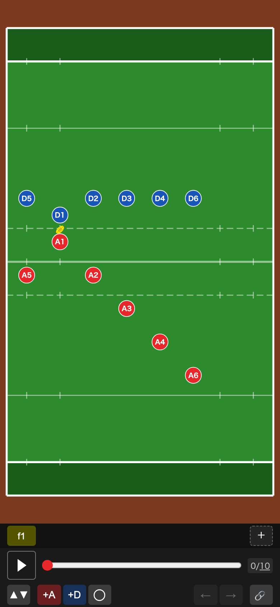
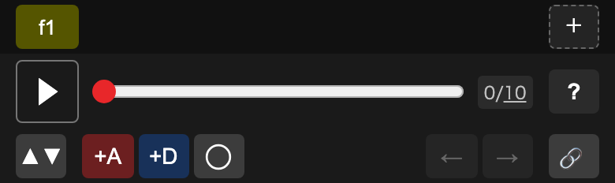
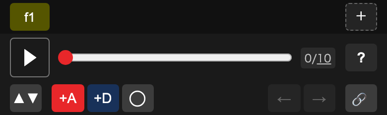
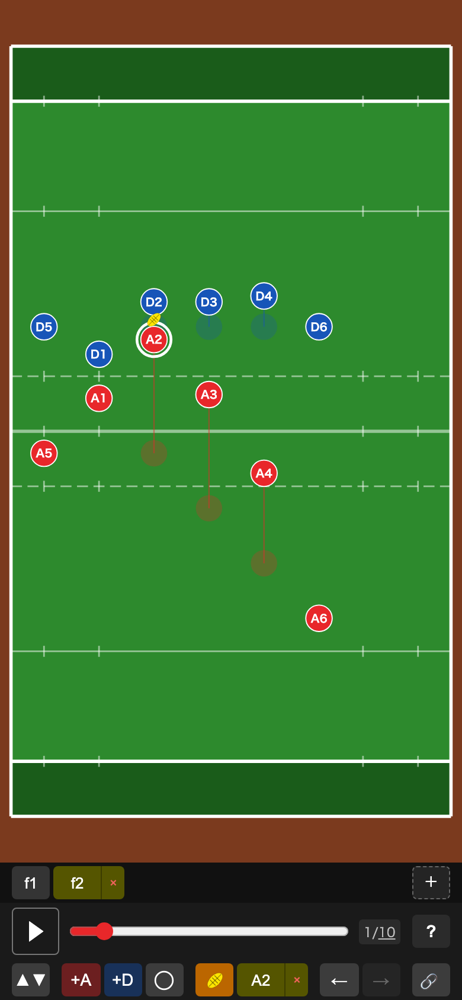
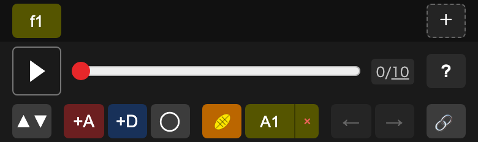
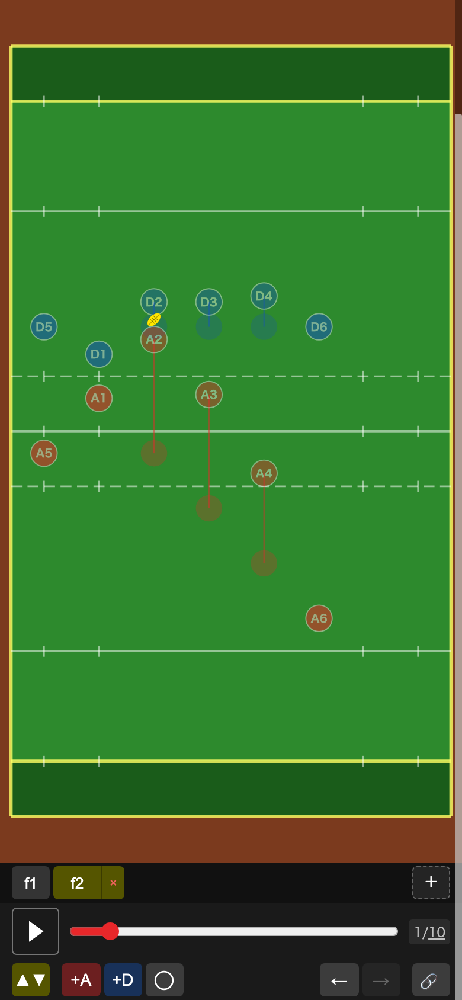

1. 画面の見方
画面の上がピッチ、下が操作エリアです。攻撃（赤）は常に画面の下から上へ攻めます。

操作エリアは上から3段です。

| 段 | 内容 |
|---|---|
| 上段 | f1 f2 … がフレーム（場面）です。右端の ＋ でフレームを追加します。 |
| 中段 | ▶ で再生、バーを動かすと好きな時点を表示できます。右の「0/10」は「現在の秒数 / 全体の秒数」で、下線の数字を押すと全体の秒数を変えられます。 |
| 下段 | 左から順に下の表のボタンが並んでいます。 |
操作パネルのボタン
2. プレイヤーを追加する
- +A（攻撃）か +D（守備）を押すと、ボタンが明るく点灯します。
- ピッチ上の置きたい場所をタップすると、そこにプレイヤーが追加されます。
- 追加すると点灯は自動で消え、追加したプレイヤーが選ばれた状態になります。もう一人追加するときは、もう一度ボタンを押してください。

- 名前は A7、D7 … と自動で付きます。あとから変更できます（5章）。
- 追加をやめたいときは、点灯しているボタンをもう一度押します。
形（丸・四角）を選ぶ
+D の右のボタンで、プレイヤーの形を丸と四角から選べます。最初は丸です。FW と BK を分けるなど、2種類のプレイヤーを見分けたいときに使ってください。
- プレイヤーを選んでいないときに押すと、これから追加するプレイヤーの形が切り替わります。続けて追加すると同じ形になります。
- プレイヤーを選んでいるときに押すと、そのプレイヤーの形が切り替わります。
3. フレームで動きを付ける
プレイは「フレーム（場面）」の連続で作ります。f1 が最初の立ち位置、f2 が少し後の位置…というように各フレームでプレイヤーを置くと、再生したときにその間をなめらかに動きます。
- 上段右端の ＋ を押すと、新しいフレーム（f2 など）ができて点灯します。
- 動かしたいプレイヤーを指で押さえ、そのまま目的の場所までなぞって離します。
- 同じように、そのフレームで動く人をすべて動かします。
- 次の場面は、また ＋ で追加して続けます。
- ▶ で再生して動きを確認します。

- 動かしている間、プレイヤーは指より少し上に表示されます（指で隠れないため）。離したときに表示されていた場所に置かれます。
- フレームを点灯させると、前のフレームの位置が薄い丸で、そこまでの動きが線（攻撃は赤・守備は青）で表示されます。
- 新しいフレームは「最後のフレームの1秒後」にできます。中段のバーをそれより先に動かしてから ＋ を押すと、バーの時点にできます。
- フレームを選び直すときは、上段の f1 f2 … を押します。
- フレームを削除するには、点灯中のフレームの右に出る × を押します（f1 は削除できません）。
4. ボールを渡す
ボールは「各フレームで誰が持っているか」を決めると、フレームの間でパスされたように動きます。
- 上段でボールを受け取るフレーム（例：f2）を点灯させます。
- ボールを持たせたいプレイヤーをタップして選びます。
- 下段に出る 🏉 を押します。点灯すれば、そのフレームからそのプレイヤーがボールを持ちます。

例：f1 で A1、f2 で A2 が持つようにすると、f1 から f2 の間にボールが A1 から A2 へ飛びます。
5. 名前の変更・削除、元に戻す
名前を変える
プレイヤーを選び、下段の名前（例：A1）を押すと入力欄が出ます。名前は1〜3文字です。全角（漢字・ひらがな）は2文字までが見やすくおすすめです。
プレイヤーを削除する
プレイヤーを選び、名前の右の × を押します。そのプレイヤーはすべてのフレームから消えます。
元に戻す・やり直す
操作を間違えたら ← で1つ前に戻せます。戻しすぎたら → でやり直せます。
6. ピッチを上下にスクロールする
画面に入りきらない部分を見たいときに使います。
- ▲▼ を押すと点灯し、スクロールモードになります。
- ピッチを指で上下になぞると表示位置が動きます。
- 終わったら、もう一度 ▲▼ を押して戻ります。

スクロールモード中はプレイヤーを動かせません。プレイヤーが動かないときは、このモードになっていないか確認してください。
8. ホーム画面に追加する（iPhone）
ホーム画面にアイコンを置くと、アプリのように全画面で使えます。
- Safari で yc-move を開きます。
- 画面下（または上）の共有ボタン（四角から上向き矢印が出たマーク）を押します。
- メニューの「ホーム画面に追加」を選び、右上の「追加」を押します。
Safari とホーム画面アプリでは保存場所が別なので、Safari で編集していたプレイはホーム画面アプリでは再開できません（逆も同じ）。続きを別の場所で編集したいときは、共有URLを開いて鉛筆ボタンから再開してください。